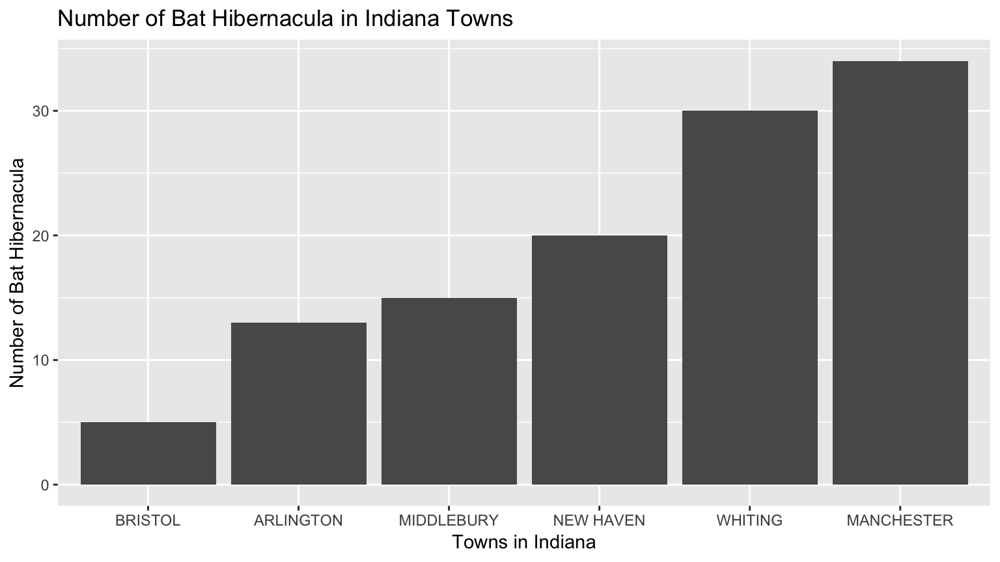

The Indiana Bat, scientifically named Myotis Sodalis, is a specific species of bats classified as endangered in 1967, when people began disrupting the bats’ hibernation patterns in winter. Indiana bats are prone to disturbances as they hibernate in large numbers in very few caves. This means that a particular cave in winter can contain a high density of the Indiana Bat population, and if disrupted this can result in the deaths of a large portion of the population. During the summer, the Indiana Bat roosts under peeling bark of dead and dying trees. The loss of summer habitat can also contribute to the death of bats, which exacerbates the already endangered state of this species.1
The barplot above illustrates the distribution of documented endangered Indiana bats among six towns in Indiana. The data illustrated above represents the number of bats roosting during the summer, with the exception of the data for Manchester. That data represents the number of bats hibernating during winter.
The survey data used to create the dataset represented has been collected since the early 1930s and continues to be collected today. The data is collected periodically via underground surveys to identify and count the number of bats that hibernate during the winter.2
It is estimated that as of 2017 there are a total of 559,781 Indiana Bats located in the United States. Indiana has seen an approximate 10% population decline over the past 2 years. This suggests that the Indiana Bats’ recovery may be difficult and that it might be on its way to extinction.3
Might climate change and temperature rise be causing this trend? Is there influence of the geographical location of each habitat? Which towns have the highest reported numbers of bats?
Word Count: 288
Bennett, Alyssa B. “Indian Bat (Towns).” Arcgis.com, 2007, www.arcgis.com/sharing/rest/content/items/cb6722eb750b4a6a93393299fc34c5d9/info/metadata/metadata.xml?format=default&output=html.↩
Service, U.S. Fish and Wildlife. “USFWS: Indiana Bat (Myotis Sodalis).” Official Web Page of the U S Fish and Wildlife Service, 2018, www.fws.gov/midwest/endangered/mammals/inba/index.html.↩
“2017 Indiana Bat (Myotis Sodalis) Population Status Update.” U.S. Fish & Wildlife Service, 2017, www.fws.gov/midwest/Endangered/mammals/inba/pdf/2017_Population_Stats_Indiana_Bat_Revised_%2013Nov2018.pdf.↩